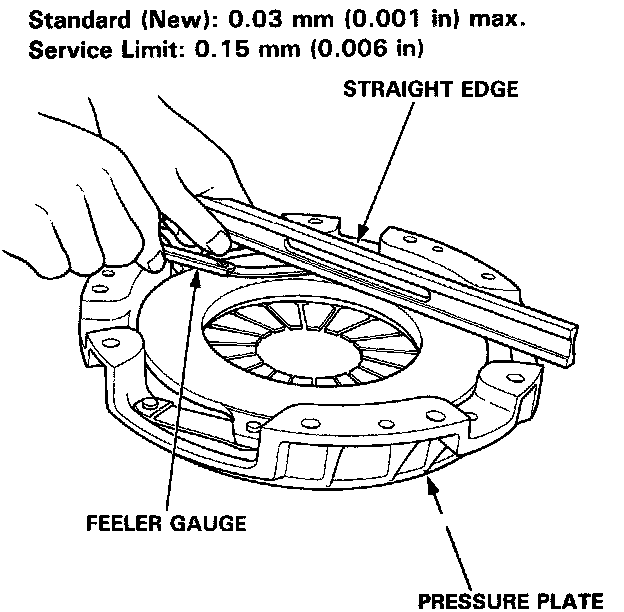
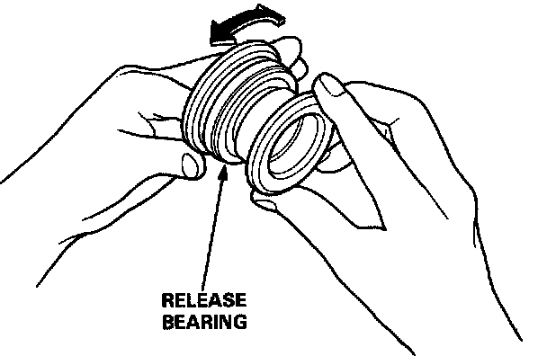
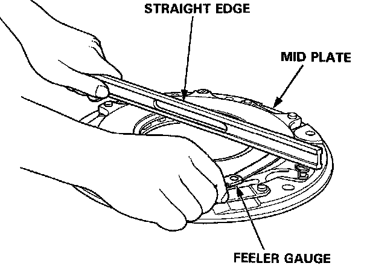
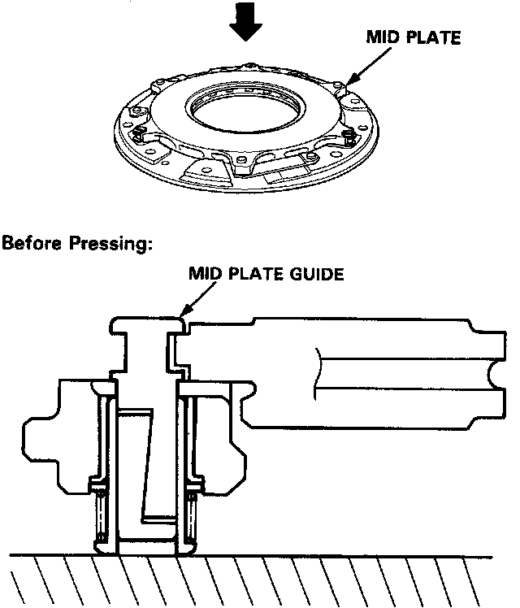
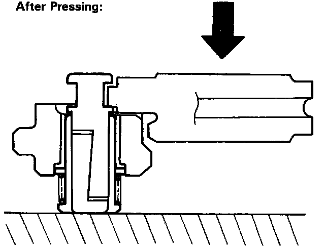
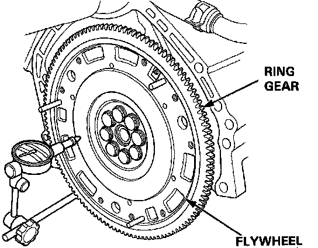
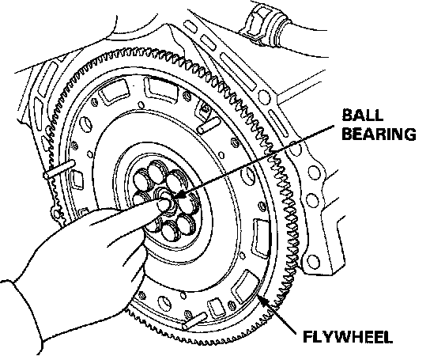

Clutch: Testing and Inspection
PRESSURE PLATENOTE: If replacement is required, always replace the pressure plate, mid plate, and flywheel as a set.
1. Inspect the pressure plate surface for wear, cracks, and burning.
2. Inspect the fingers of the diaphragm spring for wear at the release bearing contact area.

3. Inspect for warpage using a straight edge and feeler gauge.
- Measure across the pressure plate at three points.
- If the warpage is more than the service limit, replace the pressure plate.
RELEASE BEARING

1. Check the release bearing for excessive play by spinning it by hand.
CAUTION: Do not wash the release bearing in solvent.
2. Replace the release bearing with a new one if there is excessive play.
1ST AND 2ND CLUTCH DISCS
1. Inspect the lining of the clutch disc for signs of slipping or oil. Replace it if it is burned black or oil soaked.

2. Measure the clutch disc thickness.
Standard:
1st Clutch Disc: 8.3 - 9.0 mm (0.33 - 0.35 in)
2nd Clutch Disc: 7.6 - 8.3 mm (0.30 - 0.33 in)
Service Limit:
1st Clutch Disc: 5.9 mm (0.23 in)
2nd Clutch Disc: 5.4 mm (0.21 in)
If the thickness is less than the service limit, replace the clutch disc.

3. Measure the depth from the lining surface to the rivets, on both sides.
1st and 2nd Clutch Discs:
Standard: 1.1 mm (0.04 in) min.
Service Limit: 0.2 mm (0.01 in)
If the rivet depth is less than the service limit, replace the clutch disc.
MID PLATE
NOTE: If replacement is required, always replace the pressure plate, mid plate, and flywheel as a set.
1. Inspect the mid plate surface for wear, cracks, and burning.

2. Inspect for warpage using a straight edge and feeler gauge.
- Measure across the mid plate at three points.
Standard: (New): 0.05 mm (0.002 in) max.
Service Limit: 0.15 mm (0.006 in)
If the warpage is more than the service limit, replace the mid plate.
MID PLATE GUIDES
NOTE:
- The mid plate guides are the self-adjusting mechanisms for the mid plate.
- Make sure all parts are clean before inspection.


- Check the mid plate guides by pushing down on each of the guides by hand (10 - 60 kg). The mid plate guides should compress and lock in place.
If the mid plate guides do not move or compress, disassemble the mid plate guides and inspect them for debris, wear and damage.
FLYWHEEL AND FLYWHEEL BEARING
NOTE: If replacement is required, always replace the pressure plate, mid plate, and flywheel as a set.
1. Inspect the ring gear teeth for wear and damage.
2. Inspect the clutch disc mating surface on the flywheel for wear, cracks, and burning.

3. Measure the flywheel runout using a dial indicator through at least two full turns. Push against the flywheel each time you turn it to take up the crankshaft thrust washer clearance.
NOTE: The runout can be measured with engine installed.
Standard (New): 0.05 mm (0.002 in) max.
Service Limit: 0.15 mm (0.006 in)
If the runout exceeds the service limit, replace the flywheel.

4. Turn the inner race of the ball bearing with your finger. The bearing should turn smoothly and quietly. Check that the bearing outer race fits tightly in the flywheel. Replace the bearing if the race does not turn smoothly, quietly, or fit tightly in the flywheel.